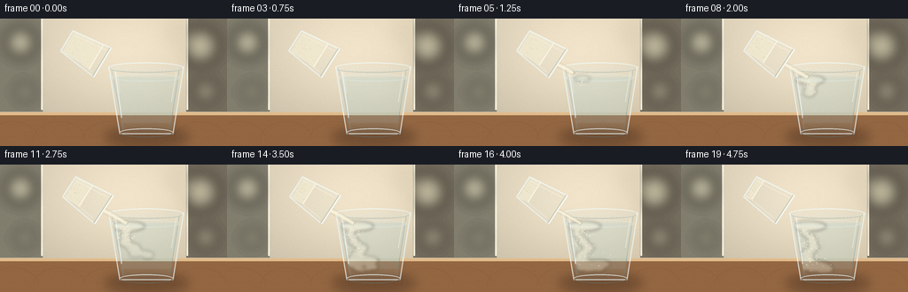
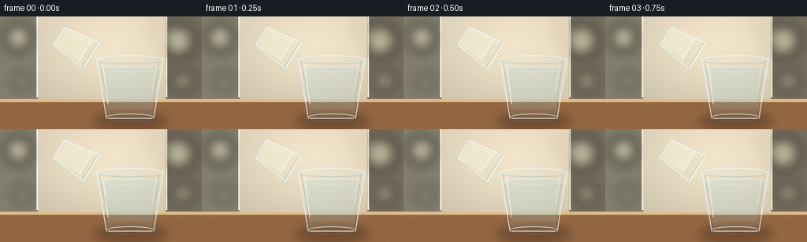
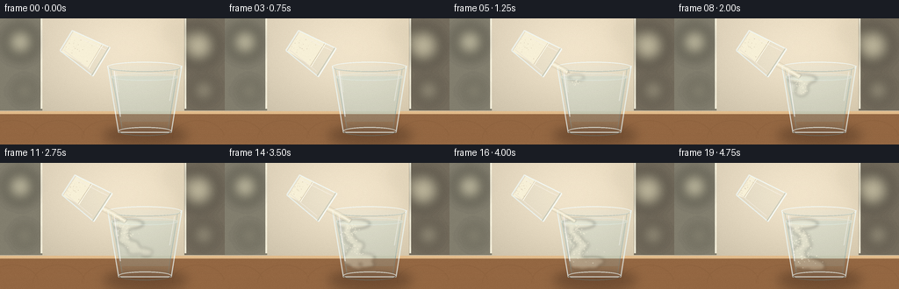
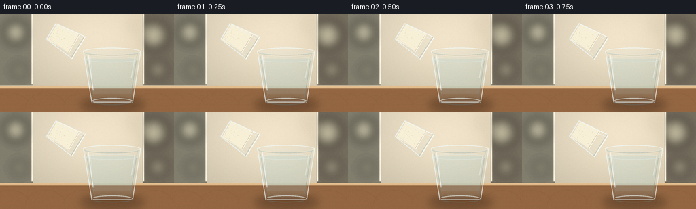
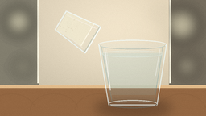

CODING AGENTS AS PIXEL WORLD MODELS
traex/GPT-5.6-Sol · material_0019
点击播放 · 原生 RGB 像素
逐轮保存的候选
回放视频、检查图与代码变化。
每份候选均可单独播放。实际图片检查记录在下方工具轨迹中。
候选 01播放与检查图
点击播放 · 原生 RGB 像素


展开代码变化
--- 上一保存版本
+++ 本次保存版本
@@ -0,0 +1,234 @@
+from pathlib import Path
+import math
+import numpy as np
+from PIL import Image, ImageDraw, ImageFilter
+import artifact_io
+
+W,H,N,S = 256,144,20,4
+rng_global = np.random.default_rng(1907)
+
+def sc(v): return int(round(v*S))
+def pts(seq): return [(sc(x),sc(y)) for x,y in seq]
+def bezier(p0,p1,p2,p3,t):
+ u=1-t
+ return (u**3*p0[0]+3*u*u*t*p1[0]+3*u*t*t*p2[0]+t**3*p3[0],
+ u**3*p0[1]+3*u*u*t*p1[1]+3*u*t*t*p2[1]+t**3*p3[1])
+
+def background(frame):
+ h,w=H*S,W*S
+ yy,xx=np.mgrid[0:h,0:w]
+ # soft, warm kitchen background with a cinematic pool of daylight
+ y=yy/(h-1); x=xx/(w-1)
+ top=np.zeros((h,w,3),dtype=np.float32)
+ top[:,:,0]=202 + 25*(1-y) + 8*x
+ top[:,:,1]=192 + 23*(1-y) + 5*x
+ top[:,:,2]=170 + 22*(1-y)
+ glow=np.exp(-(((x-.56)/.34)**2+((y-.30)/.43)**2))*18
+ top += glow[:,:,None]
+ # vignette
+ vig=((x-.5)**2/.34 + (y-.48)**2/.55)*15
+ top -= vig[:,:,None]
+ im=Image.fromarray(np.uint8(np.clip(top,0,255)),'RGB').convert('RGBA')
+ d=ImageDraw.Draw(im,'RGBA')
+ # blurred cabinets / backsplash, intentionally defocused
+ d.rectangle((0,0,sc(48),sc(105)), fill=(130,126,110,30))
+ d.rectangle((sc(210),0,sc(256),sc(105)), fill=(116,108,93,28))
+ d.line((sc(47),0,sc(47),sc(103)),fill=(245,240,220,45),width=sc(2))
+ d.line((sc(211),0,sc(211),sc(103)),fill=(245,240,220,38),width=sc(2))
+ # bokeh highlights
+ b=Image.new('RGBA',im.size,(0,0,0,0)); bd=ImageDraw.Draw(b,'RGBA')
+ for cx,cy,r,a in [(23,27,15,35),(226,31,19,28),(198,17,8,30),(28,83,9,20),(232,82,12,18)]:
+ bd.ellipse((sc(cx-r),sc(cy-r),sc(cx+r),sc(cy+r)),fill=(255,248,211,a))
+ b=b.filter(ImageFilter.GaussianBlur(sc(8)))
+ im=Image.alpha_composite(im,b)
+ # countertop
+ d=ImageDraw.Draw(im,'RGBA')
+ d.rectangle((0,sc(106),sc(256),sc(144)),fill=(148,103,66,255))
+ d.rectangle((0,sc(106),sc(256),sc(109)),fill=(227,188,139,80))
+ # wood gradient overlay
+ wood=Image.new('RGBA',im.size,(0,0,0,0)); wd=ImageDraw.Draw(wood,'RGBA')
+ for k in range(22):
+ y0=108+k*1.7
+ col=(80,47,27,7+(k%4)*2)
+ wd.line((0,sc(y0),sc(256),sc(y0+.4*math.sin(k))),fill=col,width=max(1,sc(.3)))
+ for x0 in [9,62,118,221]:
+ wd.arc((sc(x0-25),sc(116),sc(x0+35),sc(158)),180,350,fill=(77,42,24,18),width=sc(1))
+ im=Image.alpha_composite(im,wood)
+ return im
+
+def draw_main_glass(base, f):
+ # soft contact shadow
+ sh=Image.new('RGBA',base.size,(0,0,0,0)); sd=ImageDraw.Draw(sh,'RGBA')
+ sd.ellipse((sc(118),sc(124),sc(213),sc(143)),fill=(49,29,19,95))
+ sh=sh.filter(ImageFilter.GaussianBlur(sc(6)))
+ base.alpha_composite(sh)
+
+ outer=[(122,54),(207,54),(195,130),(135,130)]
+ inner=[(127,59),(202,59),(191.5,126),(139,126)]
+ glass=Image.new('RGBA',base.size,(0,0,0,0)); gd=ImageDraw.Draw(glass,'RGBA')
+ gd.polygon(pts(outer), fill=(210,235,238,22))
+ # water body
+ waterpoly=[(126.5,66),(202.5,66),(191.5,126),(139,126)]
+ gd.polygon(pts(waterpoly),fill=(166,211,219,56))
+ # slight lower refraction / warm countertop showing through
+ gd.polygon(pts([(139,118),(192.5,118),(191.5,126),(139,126)]),fill=(187,220,219,34))
+ base.alpha_composite(glass)
+
+ # flour cloud and suspended grains, clipped to the inside of the glass
+ clip=Image.new('L',base.size,0); cd=ImageDraw.Draw(clip)
+ cd.polygon(pts(inner),fill=255)
+ cloud=Image.new('RGBA',base.size,(0,0,0,0)); qd=ImageDraw.Draw(cloud,'RGBA')
+ if f>=4:
+ age=f-4
+ # impact bloom at waterline grows into a creamy floating layer
+ grow=min(1,age/5)
+ cx=142.5 + 1.2*math.sin(age*.7)
+ qd.ellipse((sc(cx-5-11*grow),sc(64),sc(cx+7+15*grow),sc(70+5*grow)),
+ fill=(247,241,218,int(80+55*grow)))
+ # central descending plume, bulbous and irregular
+ depth=min(119,69+age*4.5)
+ count=max(1,int((depth-69)/3.0))
+ for j in range(count):
+ y0=69+j*3.0
+ t=(y0-69)/max(1,(depth-69))
+ x0=143 + 5.0*math.sin(j*.61+age*.26) + 5*t + 1.8*math.sin(j*1.71)
+ rad=(4.2+5.5*t)*(0.72+0.25*math.sin(j*1.31)**2)
+ alpha=int(110*(1-.30*t))
+ qd.ellipse((sc(x0-rad),sc(y0-rad*.58),sc(x0+rad),sc(y0+rad*.74)),
+ fill=(246,240,216,alpha))
+ # curling side wisps
+ if age>=5:
+ for j in range((age-4)*2):
+ tt=j/max(1,(age-4)*2-1)
+ x0=145 + (17+age*.35)*tt + 3*math.sin(tt*8+age)
+ y0=80 + age*2.1 + 10*tt + 3*math.sin(tt*5)
+ r=3.6+3.8*tt
+ qd.ellipse((sc(x0-r),sc(y0-r*.55),sc(x0+r),sc(y0+r*.55)),fill=(244,237,213,66))
+ # spreading billows near the bottom after the plume arrives
+ if age>=10:
+ g=(age-9)
+ for j in range(8):
+ ang=j*0.92+age*.18
+ x0=153+math.cos(ang)*(4+j*1.45)
+ y0=116+math.sin(ang)*3.2-j*.20
+ r=3.8+g*.45+(j%3)
+ qd.ellipse((sc(x0-r),sc(y0-r*.55),sc(x0+r),sc(y0+r*.62)),fill=(242,235,210,74))
+ cloud=cloud.filter(ImageFilter.GaussianBlur(sc(1.7)))
+ cloud.putalpha(Image.composite(cloud.getchannel('A'),Image.new('L',base.size,0),clip))
+ base.alpha_composite(cloud)
+ # crisp suspended specks, also clipped
+ specks=Image.new('RGBA',base.size,(0,0,0,0)); sp=ImageDraw.Draw(specks,'RGBA')
+ rr=np.random.default_rng(4200)
+ for i in range(150):
+ birth=int(rr.integers(4,18)); a=f-birth
+ if a<0: continue
+ y0=68 + a*(1.7+rr.random()*2.2) + rr.random()*5
+ if y0>125: continue
+ x0=143 + rr.normal(0,2.8+a*.62) + 1.2*math.sin(a*.8+i)
+ r=.22+rr.random()*.50
+ sp.ellipse((sc(x0-r),sc(y0-r),sc(x0+r),sc(y0+r)),fill=(250,244,222,int(75+90*rr.random())))
+ specks.putalpha(Image.composite(specks.getchannel('A'),Image.new('L',base.size,0),clip))
+ base.alpha_composite(specks)
+
+ # glass edges, rim and highlights above contents
+ edge=Image.new('RGBA',base.size,(0,0,0,0)); ed=ImageDraw.Draw(edge,'RGBA')
+ ed.line(pts([(122.5,54),(135,130),(195,130),(207,54)]),fill=(237,250,250,180),width=sc(1.15),joint='curve')
+ ed.line(pts([(126,58),(139,126)]),fill=(109,154,163,78),width=sc(.7))
+ ed.line(pts([(202,58),(191.5,126)]),fill=(91,137,148,75),width=sc(.7))
+ # rim ellipses and water surface
+ ed.ellipse((sc(122),sc(49.5),sc(207),sc(61)),fill=(220,240,242,18),outline=(242,252,252,205),width=sc(1))
+ ed.arc((sc(124),sc(52),sc(205),sc(61)),0,180,fill=(100,145,154,78),width=sc(1))
+ ed.ellipse((sc(126),sc(62.5),sc(203),sc(71)),fill=(189,224,227,24),outline=(225,242,240,94),width=sc(1))
+ # base thickness
+ ed.arc((sc(135),sc(124),sc(195),sc(134)),0,180,fill=(95,132,139,92),width=sc(1))
+ ed.arc((sc(135),sc(124),sc(195),sc(133)),180,360,fill=(241,250,247,190),width=sc(1))
+ # vertical specular strips
+ ed.line(pts([(130,60),(137,112)]),fill=(255,255,255,150),width=sc(1.3))
+ ed.line(pts([(132,61),(135,84)]),fill=(255,255,255,98),width=sc(.6))
+ ed.line(pts([(198.5,61),(193,94)]),fill=(255,255,255,103),width=sc(.9))
+ base.alpha_composite(edge)
+
+def draw_source_and_stream(base,f):
+ # Tilt changes subtly; mouth moves down one pixel and toward the receiving glass.
+ ang=math.radians(31 + min(f,5)*0.45)
+ u=np.array([math.cos(ang),math.sin(ang)]) # bottom -> mouth
+ n=np.array([-math.sin(ang),math.cos(ang)])
+ M=np.array([115.5+min(f,5)*.35,49.5+min(f,5)*.28])
+ B=M-u*47
+ mouth_w=19; bottom_w=13.5
+ pml=M-n*mouth_w; pmr=M+n*mouth_w
+ pbl=B-n*bottom_w; pbr=B+n*bottom_w
+
+ # flour stream behind source glass, begins gently and tapers at end
+ stream=Image.new('RGBA',base.size,(0,0,0,0)); sd=ImageDraw.Draw(stream,'RGBA')
+ start=4
+ active= f>=start and f<=17
+ if active:
+ progress=min(1,(f-start+1)/3)
+ end=np.array([143.0,66.5])
+ full_len=np.linalg.norm(end-M)
+ dest=M+(end-M)*progress
+ p0=tuple(M+n*1.0); p3=tuple(dest)
+ p1=(M[0]+8,M[1]+5); p2=(dest[0]-7,dest[1]-4)
+ curve=[bezier(p0,p1,p2,p3,t) for t in np.linspace(0,1,30)]
+ taper=1.0 if f<15 else max(.25,(18-f)/3)
+ # halo and body
+ sd.line(pts(curve),fill=(239,230,199,92),width=sc(5.1*taper+1),joint='curve')
+ sd.line(pts(curve),fill=(249,243,222,235),width=max(sc(1),sc(2.6*taper)),joint='curve')
+ # stream texture / grains
+ rr=np.random.default_rng(800+f)
+ for k in range(13):
+ t=rr.random(); x,y=bezier(p0,p1,p2,p3,t)
+ x+=rr.normal(0,.9); y+=rr.normal(0,.45)
+ r=.25+rr.random()*.45
+ sd.ellipse((sc(x-r),sc(y-r),sc(x+r),sc(y+r)),fill=(255,249,229,210))
+ blur=stream.filter(ImageFilter.GaussianBlur(sc(.28)))
+ base.alpha_composite(blur)
+
+ # source tumbler body
+ lay=Image.new('RGBA',base.size,(0,0,0,0)); d=ImageDraw.Draw(lay,'RGBA')
+ poly=[tuple(pbl),tuple(pml),tuple(pmr),tuple(pbr)]
+ d.polygon(pts(poly),fill=(210,232,231,20))
+ # Flour remaining in tipped glass: decreases continuously, still visibly flour.
+ amount=max(.19,.80-f*.032)
+ q=B+u*(47*amount)
+ fw=bottom_w+(mouth_w-bottom_w)*amount
+ # slightly mounded free surface
+ flourpoly=[tuple(pbl+u*1.8),tuple(q-n*fw),tuple(q+u*1.4+n*(fw*.75)),tuple(pbr+u*1.8)]
+ d.polygon(pts(flourpoly),fill=(239,232,207,235))
+ # flour soft shading
+ d.line(pts([tuple(q-n*fw),tuple(q+n*fw*.78)]),fill=(255,251,235,210),width=sc(1))
+ for k in range(24):
+ rr=np.random.default_rng(1000+k)
+ a=rr.random()*amount*.9+.03
+ w=bottom_w+(mouth_w-bottom_w)*a
+ pos=B+u*(47*a)+n*rr.uniform(-w*.72,w*.72)
+ r=rr.uniform(.18,.45)
+ d.ellipse((sc(pos[0]-r),sc(pos[1]-r),sc(pos[0]+r),sc(pos[1]+r)),fill=(215,205,181,100))
+ # walls
+ d.line(pts([tuple(pbl),tuple(pml)]),fill=(243,252,251,205),width=sc(1.15))
+ d.line(pts([tuple(pbr),tuple(pmr)]),fill=(236,249,250,190),width=sc(1.15))
+ # base and open mouth as narrow ellipses represented by double edges perpendicular to axis
+ d.line(pts([tuple(pbl),tuple(pbr)]),fill=(242,251,250,180),width=sc(1.5))
+ d.line(pts([tuple(pml),tuple(pmr)]),fill=(247,253,251,225),width=sc(1.25))
+ d.line(pts([tuple(pml-u*1.6),tuple(pmr-u*1.6)]),fill=(101,145,151,75),width=sc(.7))
+ # long highlights
+ d.line(pts([tuple(B-n*bottom_w*.72+u*3),tuple(M-n*mouth_w*.75-u*3)]),fill=(255,255,255,135),width=sc(.8))
+ d.line(pts([tuple(B+n*bottom_w*.78+u*3),tuple(M+n*mouth_w*.78-u*5)]),fill=(255,255,255,80),width=sc(.65))
+ base.alpha_composite(lay)
+
+
+def make_frame(f):
+ im=background(f)
+ draw_main_glass(im,f)
+ draw_source_and_stream(im,f)
+ # subtle foreground light and coherent fine grain
+ arr=np.asarray(im.convert('RGB').resize((W,H),Image.Resampling.LANCZOS)).astype(np.int16)
+ rr=np.random.default_rng(777) # fixed sensor grain avoids distracting shimmer
+ grain=rr.normal(0,.75,arr.shape[:2])[:,:,None]
+ arr=np.clip(arr+grain,0,255).astype(np.uint8)
+ return arr
+
+frames=np.stack([make_frame(i) for i in range(N)],axis=0)
+assert frames.shape==(20,144,256,3) and frames.dtype==np.uint8
+artifact_io.save(frames,Path(__file__).resolve().parent)
候选 02播放与检查图
点击播放 · 原生 RGB 像素


展开代码变化
--- 上一保存版本
+++ 本次保存版本
@@ -195,9 +195,11 @@
fw=bottom_w+(mouth_w-bottom_w)*amount
# slightly mounded free surface
flourpoly=[tuple(pbl+u*1.8),tuple(q-n*fw),tuple(q+u*1.4+n*(fw*.75)),tuple(pbr+u*1.8)]
- d.polygon(pts(flourpoly),fill=(239,232,207,235))
+ # Opaque warm-white powder reads distinctly through the otherwise transparent tumbler.
+ d.polygon(pts(flourpoly),fill=(247,240,215,250))
# flour soft shading
- d.line(pts([tuple(q-n*fw),tuple(q+n*fw*.78)]),fill=(255,251,235,210),width=sc(1))
+ d.line(pts([tuple(q-n*fw),tuple(q+n*fw*.78)]),fill=(190,177,148,120),width=sc(.75))
+ d.line(pts([tuple(q-n*fw+u*.7),tuple(q+n*fw*.78+u*.7)]),fill=(255,253,238,235),width=sc(.7))
for k in range(24):
rr=np.random.default_rng(1000+k)
a=rr.random()*amount*.9+.03
可观测工具轨迹
实际执行的命令与返回图片。
命令 1exit 0
/bin/bash -lc "cat prompt.txt && printf '\\n---RULES---\\n' && cat GENERATION_RULES.md && printf '\\n---SPEC---\\n' && cat task_spec.json"
命令 2exit 0
/bin/bash -lc "find . -maxdepth 2 -type f -printf '%p\\n' | sort"
命令 3exit 0
/bin/bash -lc 'cat artifact_io.py'
命令 4exit 0
/bin/bash -lc "cat > generate.py <<'PY'
from pathlib import Path
import math
import numpy as np
from PIL import Image, ImageDraw, ImageFilter
import artifact_io
W,H,N,S = 256,144,20,4
rng_global = np.random.default_rng(1907)
def sc(v): return int(round(v*S))
def pts(seq): return [(sc(x),sc(y)) for x,y in seq]
def bezier(p0,p1,p2,p3,t):
u=1-t
return (u**3*p0[0]+3*u*u*t*p1[0]+3*u*t*t*p2[0]+t**3*p3[0],
u**3*p0[1]+3*u*u*t*p1[1]+3*u*t*t*p2[1]+t**3*p3[1])
def background(frame):
h,w=H*S,W*S
yy,xx=np.mgrid[0:h,0:w]
# soft, warm kitchen background with a cinematic pool of daylight
y=yy/(h-1); x=xx/(w-1)
top=np.zeros((h,w,3),dtype=np.float32)
top[:,:,0]=202 + 25*(1-y) + 8*x
top[:,:,1]=192 + 23*(1-y) + 5*x
top[:,:,2]=170 + 22*(1-y)
glow=np.exp(-(((x-.56)/.34)**2+((y-.30)/.43)**2))*18
top += glow[:,:,None]
# vignette
vig=((x-.5)**2/.34 + (y-.48)**2/.55)*15
top -= vig[:,:,None]
im=Image.fromarray(np.uint8(np.clip(top,0,255)),'RGB').convert('RGBA')
d=ImageDraw.Draw(im,'RGBA')
# blurred cabinets / backsplash, intentionally defocused
d.rectangle((0,0,sc(48),sc(105)), fill=(130,126,110,30))
d.rectangle((sc(210),0,sc(256),sc(105)), fill=(116,108,93,28))
d.line((sc(47),0,sc(47),sc(103)),fill=(245,240,220,45),width=sc(2))
d.line((sc(211),0,sc(211),sc(103)),fill=(245,240,220,38),width=sc(2))
# bokeh highlights
b=Image.new('RGBA',im.size,(0,0,0,0)); bd=ImageDraw.Draw(b,'RGBA')
for cx,cy,r,a in [(23,27,15,35),(226,31,19,28),(198,17,8,30),(28,83,9,20),(232,82,12,18)]:
bd.ellipse((sc(cx-r),sc(cy-r),sc(cx+r),sc(cy+r)),fill=(255,248,211,a))
b=b.filter(ImageFilter.GaussianBlur(sc(8)))
im=Image.alpha_composite(im,b)
# countertop
d=ImageDraw.Draw(im,'RGBA')
d.rectangle((0,sc(106),sc(256),sc(144)),fill=(148,103,66,255))
d.rectangle((0,sc(106),sc(256),sc(109)),fill=(227,188,139,80))
# wood gradient overlay
wood=Image.new('RGBA',im.size,(0,0,0,0)); wd=ImageDraw.Draw(wood,'RGBA')
for k in range(22):
y0=108+k*1.7
col=(80,47,27,7+(k%4)*2)
wd.line((0,sc(y0),sc(256),sc(y0+.4*math.sin(k))),fill=col,width=max(1,sc(.3)))
for x0 in [9,62,118,221]:
wd.arc((sc(x0-25),sc(116),sc(x0+35),sc(158)),180,350,fill=(77,42,24,18),width=sc(1))
im=Image.alpha_composite(im,wood)
return im
def draw_main_glass(base, f):
# soft contact shadow
sh=Image.new('RGBA',base.size,(0,0,0,0)); sd=ImageDraw.Draw(sh,'RGBA')
sd.ellipse((sc(118),sc(124),sc(213),sc(143)),fill=(49,29,19,95))
sh=sh.filter(ImageFilter.GaussianBlur(sc(6)))
base.alpha_composite(sh)
outer=[(122,54),(207,54),(195,130),(135,130)]
inner=[(127,59),(202,59),(191.5,126),(139,126)]
glass=Image.new('RGBA',base.size,(0,0,0,0)); gd=ImageDraw.Draw(glass,'RGBA')
gd.polygon(pts(outer), fill=(210,235,238,22))
# water body
waterpoly=[(126.5,66),(202.5,66),(191.5,126),(139,126)]
gd.polygon(pts(waterpoly),fill=(166,211,219,56))
# slight lower refraction / warm countertop showing through
gd.polygon(pts([(139,118),(192.5,118),(191.5,126),(139,126)]),fill=(187,220,219,34))
base.alpha_composite(glass)
# flour cloud and suspended grains, clipped to the inside of the glass
clip=Image.new('L',base.size,0); cd=ImageDraw.Draw(clip)
cd.polygon(pts(inner),fill=255)
cloud=Image.new('RGBA',base.size,(0,0,0,0)); qd=ImageDraw.Draw(cloud,'RGBA')
if f>=4:
age=f-4
# impact bloom at waterline grows into a creamy floating layer
grow=min(1,age/5)
cx=142.5 + 1.2*math.sin(age*.7)
qd.ellipse((sc(cx-5-11*grow),sc(64),sc(cx+7+15*grow),sc(70+5*grow)),
fill=(247,241,218,int(80+55*grow)))
# central descending plume, bulbous and irregular
depth=min(119,69+age*4.5)
count=max(1,int((depth-69)/3.0))
for j in range(count):
y0=69+j*3.0
t=(y0-69)/max(1,(depth-69))
x0=143 + 5.0*math.sin(j*.61+age*.26) + 5*t + 1.8*math.sin(j*1.71)
rad=(4.2+5.5*t)*(0.72+0.25*math.sin(j*1.31)**2)
alpha=int(110*(1-.30*t))
qd.ellipse((sc(x0-rad),sc(y0-rad*.58),sc(x0+rad),sc(y0+rad*.74)),
fill=(246,240,216,alpha))
# curling side wisps
if age>=5:
for j in range((age-4)*2):
tt=j/max(1,(age-4)*2-1)
x0=145 + (17+age*.35)*tt + 3*math.sin(tt*8+age)
y0=80 + age*2.1 + 10*tt + 3*math.sin(tt*5)
r=3.6+3.8*tt
qd.ellipse((sc(x0-r),sc(y0-r*.55),sc(x0+r),sc(y0+r*.55)),fill=(244,237,213,66))
# spreading billows near the bottom after the plume arrives
if age>=10:
g=(age-9)
for j in range(8):
ang=j*0.92+age*.18
x0=153+math.cos(ang)*(4+j*1.45)
y0=116+math.sin(ang)*3.2-j*.20
r=3.8+g*.45+(j%3)
qd.ellipse((sc(x0-r),sc(y0-r*.55),sc(x0+r),sc(y0+r*.62)),fill=(242,235,210,74))
cloud=cloud.filter(ImageFilter.GaussianBlur(sc(1.7)))
cloud.putalpha(Image.composite(cloud.getchannel('A'),Image.new('L',base.size,0),clip))
base.alpha_composite(cloud)
# crisp suspended specks, also clipped
specks=Image.new('RGBA',base.size,(0,0,0,0)); sp=ImageDraw.Draw(specks,'RGBA')
rr=np.random.default_rng(4200)
for i in range(150):
birth=int(rr.integers(4,18)); a=f-birth
if a<0: continue
y0=68 + a*(1.7+rr.random()*2.2) + rr.random()*5
if y0>125: continue
x0=143 + rr.normal(0,2.8+a*.62) + 1.2*math.sin(a*.8+i)
r=.22+rr.random()*.50
sp.ellipse((sc(x0-r),sc(y0-r),sc(x0+r),sc(y0+r)),fill=(250,244,222,int(75+90*rr.random())))
specks.putalpha(Image.composite(specks.getchannel('A'),Image.new('L',base.size,0),clip))
base.alpha_composite(specks)
# glass edges, rim and highlights above contents
edge=Image.new('RGBA',base.size,(0,0,0,0)); ed=ImageDraw.Draw(edge,'RGBA')
ed.line(pts([(122.5,54),(135,130),(195,130),(207,54)]),fill=(237,250,250,180),width=sc(1.15),joint='curve')
ed.line(pts([(126,58),(139,126)]),fill=(109,154,163,78),width=sc(.7))
ed.line(pts([(202,58),(191.5,126)]),fill=(91,137,148,75),width=sc(.7))
# rim ellipses and water surface
ed.ellipse((sc(122),sc(49.5),sc(207),sc(61)),fill=(220,240,242,18),outline=(242,252,252,205),width=sc(1))
ed.arc((sc(124),sc(52),sc(205),sc(61)),0,180,fill=(100,145,154,78),width=sc(1))
ed.ellipse((sc(126),sc(62.5),sc(203),sc(71)),fill=(189,224,227,24),outline=(225,242,240,94),width=sc(1))
# base thickness
ed.arc((sc(135),sc(124),sc(195),sc(134)),0,180,fill=(95,132,139,92),width=sc(1))
ed.arc((sc(135),sc(124),sc(195),sc(133)),180,360,fill=(241,250,247,190),width=sc(1))
# vertical specular strips
ed.line(pts([(130,60),(137,112)]),fill=(255,255,255,150),width=sc(1.3))
ed.line(pts([(132,61),(135,84)]),fill=(255,255,255,98),width=sc(.6))
ed.line(pts([(198.5,61),(193,94)]),fill=(255,255,255,103),width=sc(.9))
base.alpha_composite(edge)
def draw_source_and_stream(base,f):
# Tilt changes subtly; mouth moves down one pixel and toward the receiving glass.
ang=math.radians(31 + min(f,5)*0.45)
u=np.array([math.cos(ang),math.sin(ang)]) # bottom -> mouth
n=np.array([-math.sin(ang),math.cos(ang)])
M=np.array([115.5+min(f,5)*.35,49.5+min(f,5)*.28])
B=M-u*47
mouth_w=19; bottom_w=13.5
pml=M-n*mouth_w; pmr=M+n*mouth_w
pbl=B-n*bottom_w; pbr=B+n*bottom_w
# flour stream behind source glass, begins gently and tapers at end
stream=Image.new('RGBA',base.size,(0,0,0,0)); sd=ImageDraw.Draw(stream,'RGBA')
start=4
active= f>=start and f<=17
if active:
progress=min(1,(f-start+1)/3)
end=np.array([143.0,66.5])
full_len=np.linalg.norm(end-M)
dest=M+(end-M)*progress
p0=tuple(M+n*1.0); p3=tuple(dest)
p1=(M[0]+8,M[1]+5); p2=(dest[0]-7,dest[1]-4)
curve=[bezier(p0,p1,p2,p3,t) for t in np.linspace(0,1,30)]
taper=1.0 if f<15 else max(.25,(18-f)/3)
# halo and body
sd.line(pts(curve),fill=(239,230,199,92),width=sc(5.1*taper+1),joint='curve')
sd.line(pts(curve),fill=(249,243,222,235),width=max(sc(1),sc(2.6*taper)),joint='curve')
# stream texture / grains
rr=np.random.default_rng(800+f)
for k in range(13):
t=rr.random(); x,y=bezier(p0,p1,p2,p3,t)
x+=rr.normal(0,.9); y+=rr.normal(0,.45)
r=.25+rr.random()*.45
sd.ellipse((sc(x-r),sc(y-r),sc(x+r),sc(y+r)),fill=(255,249,229,210))
blur=stream.filter(ImageFilter.GaussianBlur(sc(.28)))
base.alpha_composite(blur)
# source tumbler body
lay=Image.new('RGBA',base.size,(0,0,0,0)); d=ImageDraw.Draw(lay,'RGBA')
poly=[tuple(pbl),tuple(pml),tuple(pmr),tuple(pbr)]
d.polygon(pts(poly),fill=(210,232,231,20))
# Flour remaining in tipped glass: decreases continuously, still visibly flour.
amount=max(.19,.80-f*.032)
q=B+u*(47*amount)
fw=bottom_w+(mouth_w-bottom_w)*amount
# slightly mounded free surface
flourpoly=[tuple(pbl+u*1.8),tuple(q-n*fw),tuple(q+u*1.4+n*(fw*.75)),tuple(pbr+u*1.8)]
d.polygon(pts(flourpoly),fill=(239,232,207,235))
# flour soft shading
d.line(pts([tuple(q-n*fw),tuple(q+n*fw*.78)]),fill=(255,251,235,210),width=sc(1))
for k in range(24):
rr=np.random.default_rng(1000+k)
a=rr.random()*amount*.9+.03
w=bottom_w+(mouth_w-bottom_w)*a
pos=B+u*(47*a)+n*rr.uniform(-w*.72,w*.72)
r=rr.uniform(.18,.45)
d.ellipse((sc(pos[0]-r),sc(pos[1]-r),sc(pos[0]+r),sc(pos[1]+r)),fill=(215,205,181,100))
# walls
d.line(pts([tuple(pbl),tuple(pml)]),fill=(243,252,251,205),width=sc(1.15))
d.line(pts([tuple(pbr),tuple(pmr)]),fill=(236,249,250,190),width=sc(1.15))
# base and open mouth as narrow ellipses represented by double edges perpendicular to axis
d.line(pts([tuple(pbl),tuple(pbr)]),fill=(242,251,250,180),width=sc(1.5))
d.line(pts([tuple(pml),tuple(pmr)]),fill=(247,253,251,225),width=sc(1.25))
d.line(pts([tuple(pml-u*1.6),tuple(pmr-u*1.6)]),fill=(101,145,151,75),width=sc(.7))
# long highlights
d.line(pts([tuple(B-n*bottom_w*.72+u*3),tuple(M-n*mouth_w*.75-u*3)]),fill=(255,255,255,135),width=sc(.8))
d.line(pts([tuple(B+n*bottom_w*.78+u*3),tuple(M+n*mouth_w*.78-u*5)]),fill=(255,255,255,80),width=sc(.65))
base.alpha_composite(lay)
def make_frame(f):
im=background(f)
draw_main_glass(im,f)
draw_source_and_stream(im,f)
# subtle foreground light and coherent fine grain
arr=np.asarray(im.convert('RGB').resize((W,H),Image.Resampling.LANCZOS)).astype(np.int16)
rr=np.random.default_rng(777) # fixed sensor grain avoids distracting shimmer
grain=rr.normal(0,.75,arr.shape[:2])[:,:,None]
arr=np.clip(arr+grain,0,255).astype(np.uint8)
return arr
frames=np.stack([make_frame(i) for i in range(N)],axis=0)
assert frames.shape==(20,144,256,3) and frames.dtype==np.uint8
artifact_io.save(frames,Path(__file__).resolve().parent)
PY
python generate.py
ls -lh pixels.npz inspection.png index.html frames/00.png frames/19.png"命令 5exit 0
/bin/bash -lc "python generate.py && python - <<'PY'
from pathlib import Path
import numpy as np
from PIL import Image
p=np.load('pixels.npz')['pixels']
print('pixels',p.shape,p.dtype,'frames',len(list(Path('frames').glob('*.png'))))
for i in (0,4,8,12,16,19):
im=Image.open(f'frames/{i:02d}.png')
print(i,im.mode,im.size)
PY"视觉工具实际返回图片 1

视觉工具实际返回图片 2

保存候选 2 份；完成命令 5 次；可验证图片返回 2 张。原始 API 响应与完整日志保留在本地。